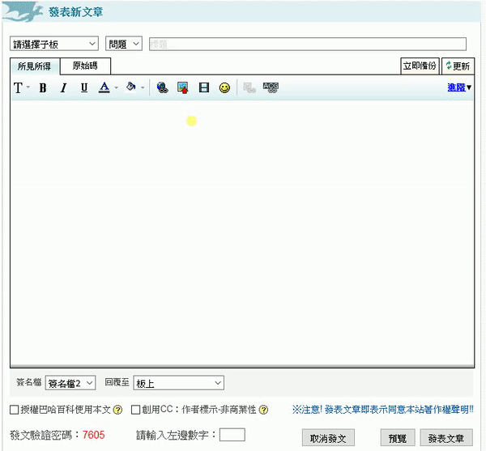
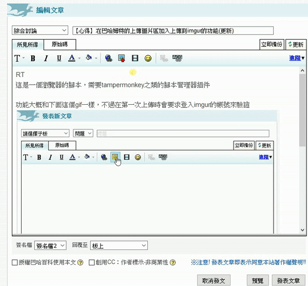

這是一個簡單的巴哈姆特 userscript
可以在上傳圖片的對話框中增加上傳到 imgur 的功能
腳本網址: https://greasyfork.org/zh-TW/scripts/36735-baha-imgur-upload
使用教學
其實就下面兩張 gif 圖片而已不過在第一次使用下面任何一個功能時會彈出一個視窗要求登入 imgur 的帳號並驗證
從電腦選取圖片上傳

把外部網址轉換成 imgur 網址

原理
基本上這個腳本的實作原理就是使用者登入後取得access_token並將它保存下來然後上傳時用這個access_token去向 api 伺服器上傳圖片完整的 code 可以到 greasyfork 上看
下面的 code 是 0.5 版的
取得 access_token
因為 imgur 在註冊 Application 時要提供一個 callback 網址所以我是直接把它放在 bahamut-imgur-upload.html 頁面上然後用 javascript 把access_token從網址中取出
網址格式:1
https://blog.maple3142.net/bahamut-imgur-upload.html#access_token=${access_token}&expires_in=aaa&token_type=bbb&refresh_token=ccc&account_username=ddd&account_id=eee
這裡面重要的只有access_token欄位，不過特別的是 query string 不知道為什麼會被放在 hashbang 之後所以就用 regex 把access_token給取出來，然後存在腳本的儲存空間中1
2
3
4
5
6
7
8// @match https://blog.maple3142.net/bahamut-imgur-upload.html
// blah blah blah....
if (location.hostname === 'blog.maple3142.net') {
const access_token = /access_token=(.*?)&/.exec(location.hash)[1]
if (access_token) {
GM_setValue('access_token', access_token)
}
}
helpers
上傳
上傳的部分直接寫成一個函數來用，回傳一個Promise
data 部分只放一個 image 是因為 imgur 能自己判斷 image 是 base64 還是網址而 catch 的部分先寫好是因為外面的錯誤處理都是 alert 然後把上傳視窗關閉1
2
3
4
5
6
7
8
9
10
11
12
13
14
15function upload(image) {
return $.ajax({
type: 'POST',
url: 'https://api.imgur.com/3/image',
data: { image },
headers: {
Authorization: `Bearer ${GM_getValue('access_token')}`
},
dataType: 'json'
}).catch(e => {
console.error(e)
alert('上傳失敗')
egg.lightbox.close()
})
}
其他
這邊是另外 3 個簡單的輔助函數1
2
3
4
5
6
7
8
9
10
11
12
13
14
15
16
17
18
19
20
21function chk_isAuthorized() {
//檢查有沒有access_token
return GM_getValue('access_token', null) !== null
}
function login() {
//觸發登入視窗
window.open(
'https://api.imgur.com/oauth2/authorize?client_id=41e93183c27ec0e&response_type=token',
'oauth',
'height=700,width=700'
)
}
function readbase64(file) {
//讀取檔案成為base64
return new Promise((res, rej) => {
const reader = new FileReader()
reader.onload = e => res(e.target.result)
reader.onerror = err => rej(err)
reader.readAsDataURL(file)
})
}
UI 和主要邏輯
UI 部分稍微麻煩了一些，因為上傳框並不是本來就存在的，是用 js 生成出來的所以只好用MutationObserver來監聽 DOM 的變化1
2
3
4
5
6
7
8
9
10
11
12
13
14
15
16
17const observer = new MutationObserver(_ => {
const $origUpl = $('#bhImgModeUpload') //上傳圖片框
if ($origUpl.css('display') === 'block') {
//如果上傳圖片框存在
//先跳過，這裡會新增一個 div#bahaimgur 元素
} else {
$('#bahaimgur').remove() //當不存在的時候就把 div#bahaimgur 移除掉
}
const $origUrlinput = $('#bhImgModeInsertUrl') //插入圖片網址的輸入框，這部分和上面很像
if ($origUrlinput.css('display') === 'block') {
//先跳過，這裡會新增一個 div#bahaimgur_cvt 元素
} else {
$('#bahaimgur_cvt').remove()
}
})
observer.observe(document.body, { attributes: true, childList: true, characterData: true, subtree: true }) //在 <body> 上監聽
#bahaimgur
這是上面 observer 裡面第一個 if 的內容1
2
3
4
5
6
7
8
9
10
11
12
13
14
15
16
17
18
19
20
21
22
23
24
25
26
27
28
29
30
31
32
33
34
35
36
37
38
39
40
41
42
43
44
45
46
47
48
49
50
51
52
53
54
55
56
57
58if ($('#imgurupl').length) return //如果已經有了就不要再新增了，否則會無限迴圈
$origUpl.after(`
<div id="bahaimgur">
<input type="file" accept="image/*" id="imgurupl">
<button id="imguruplbtn">上傳imgur</button>
</div>
`) //插入元素
$('#imguruplbtn').on('click', e => {
e.preventDefault()
e.stopPropagation()
if (!chk_isAuthorized()) {
//如果還沒有登入就要求登入
login()
return
}
const file = $('#imgurupl')[0].files[0]
if (!file) return //no file
readbase64(file)
.then(image => {
//讀取檔案成 base64格式
$('#bahaimgur').hide(),
$('#bhImgMsg')
.html('圖片上傳中, 請稍候...')
.show(),
$('#bhImgModeUpload').hide()
return upload(image.split('base64,')[1]) //這邊要做split是因為readbase64給的字串是dataurl的形式，可是imgur api要的是純base64字串
})
.then(r => {
if (!r.success) {
alert('上傳失敗')
egg.lightbox.close()
return
}
//r.data.link 是照片的網址
if (unsafeWindow.bahaRte != null) {
//如果有所見即所得編輯器
bahaRte.toolbar.insertUploadedImage(r.data.link)
} else if ($('#balaTextId').length) {
//如果是公會/叭啦叭啦頁面的回覆框旁邊的上傳圖片
const id = $('#balaTextId').html() //取得輸入框的id
const $tx = $('#' + id) //輸入框
$tx.val($tx.val() + r.data.link) //append
egg.lightbox.close()
} else if ($('#msgtalk').length) {
//如果是公會/叭啦叭啦頁面的新增欄位 (這一定要放在上面的if後面)
egg.lightbox.close()
const $msgtalk = $('#msgtalk')
$msgtalk.val($msgtalk.val() + r.data.link) //append
} else {
//其他種類 ex:新版哈拉區文章底部的簡易編輯器
prompt('暫時還不支援這種編輯器，不過可以複製下方的網址來貼上', r.data.link)
$('#bhImgMsg').hide()
$('#bhImgModeUpload').show()
$('#bahaimgur').show()
}
})
})
#bahaimgur_cvt
這和上面的也有點類似，不過更簡單一些1
2
3
4
5
6
7
8
9
10
11
12
13
14
15
16
17
18
19
20
21
22
23
24
25
26
27
28
29if ($('#bahaimgur_cvt').length) return
$('#bhImgImageUrl').after(`<button id="bahaimgur_cvt">轉換成imgur網址</button>`)
$('#bahaimgur_cvt').on('click', e => {
e.preventDefault()
if (!chk_isAuthorized()) {
login()
return
}
const url = $('#bhImgImageUrl').val() //取得輸入框內容
if (!url) {
alert('請輸入網址')
return
}
$('#bhImgMsg')
.html('圖片上傳中, 請稍候...')
.show()
upload(url).then(r => {
//直接把原本的 url 作為 image 傳給 imgur api
if (!r.success) {
alert('上傳失敗')
egg.lightbox.close()
return
}
$('#bhImgImageUrl').val(r.data.link) //把原本的輸入框網址換成 imgur 回傳的 url
$('#bhImgMsg').hide()
})
})